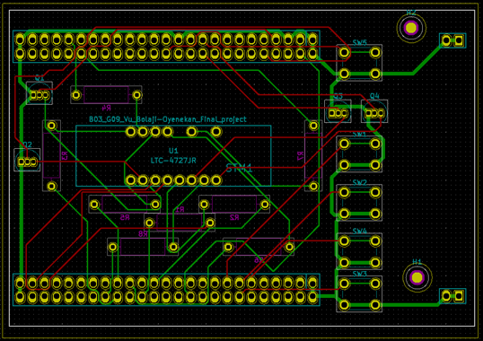

Overview
The clock does everything a bedside unit should: it keeps time on the STM32's RTC, shows it on a four-digit 7-segment LED display, and lets you set the time and an alarm through five push buttons — with snooze and off behaviors, and a light-based alarm driven through an N-channel MOSFET. The firmware (~1,300 lines of C on the STM32F4 HAL) handles 12/24-hour formats, display multiplexing, debounced inputs, and the alarm state machine.
The hardware side was the real lesson: current-limit calculations for the display segments, a MOSFET driver for the alarm light, and routing it all on a 99 × 70 mm two-layer board in KiCad. We generated Gerbers, had the board fabricated by Seeed Technology, and assembled and brought it up ourselves — then closed the loop with a SolidWorks enclosure sized to the finished board.
Highlights
- Complete firmware in C on STM32F4 HAL: RTC timekeeping, alarm state machine, multiplexed 7-segment drive, and button handling.
- Custom KiCad schematic and two-layer PCB layout, fabricated by Seeed and verified against hand calculations for LED current limits.
- MOSFET-switched light alarm output.
- SolidWorks enclosure with display window, button cutouts, and ventilation — parts and assembly included below.
